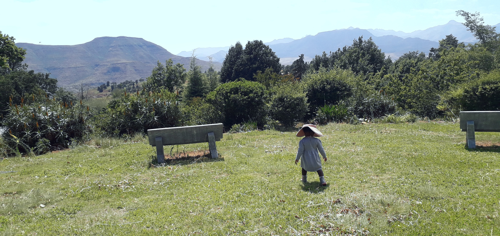

When your job title is no longer your name
A reflection on identity, grief and the quiet relief of discovering that who you are is much larger than where you work.
Ntlafatso Consultants is a quiet, Mosotho-founded space for people across the world who want to slow down, step out of hustle culture, and design a life that matches their health, energy and truth – not just their CV.
The world rewards speed, hustle and constant achievement. But meaning is found in the spaces between. We work with four “rooms” of a life: body, mind, hands and spirit.
You don’t need a new job title. You need a rhythm that tells the truth about who you are now.
Beekeeping is one of the purest slow-living practices on earth: calm, intentional, rooted in land and season – and capable of generating gentle income.
Whether you are in Maseru or Madrid, Lagos or London, the principles of beekeeping are the same: observe, listen, care, create, harvest. This program is for people leaving or reshaping formal work who want a real, practical skill for their next chapter.
Program dates and formats (in-person in Lesotho & online) are shared directly with interested participants. When you reach out, mention “Beekeeping Next Chapter”.
“A real skill, not a slogan. We start from where you are and what you can realistically manage, at your own pace.”
Beyond beekeeping, Ntlafatso Consultants is slowly curating and developing skills and practices that help people across cultures live gentler, more grounded lives.
These are not hustles. They are skills that bring dignity, joy, and sometimes income – without sacrificing your health or peace.
Whether you’re transitioning out of corporate life, easing into retirement, or simply longing for a slower, more intentional way of living – we can walk part of the road with you. We also support organisations that want to care well for people in transition.
Sessions and workshops are offered online (and in person in Lesotho, where possible). To explore what might be right for you or your organisation, simply start with an email or WhatsApp message.
Short reflections from Hapiloe on leaving formal work, healing from hustle culture, and building a life that feels like your own.
A reflection on identity, grief and the quiet relief of discovering that who you are is much larger than where you work.
Why gentle skills like beekeeping, preserving and gardening can restore a sense of usefulness and hope – without dragging you back into burnout.
As the journey unfolds, more essays, tools and stories will live here – from Lesotho and from others across the world walking their own next chapters.
Land, bees, jars, fields and quiet moments – images that speak a universal language of becoming, tending and slowing down.
